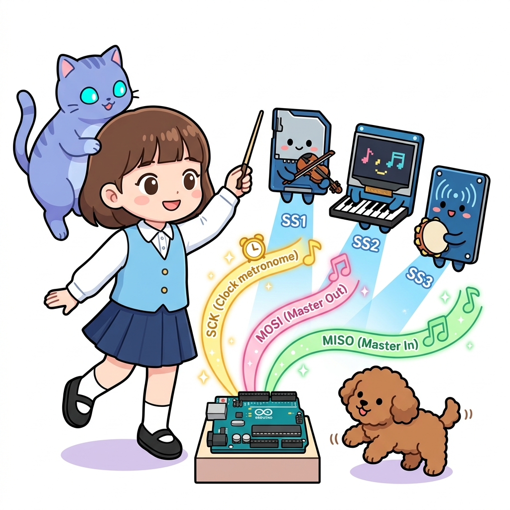
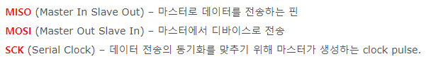
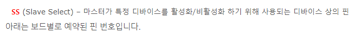
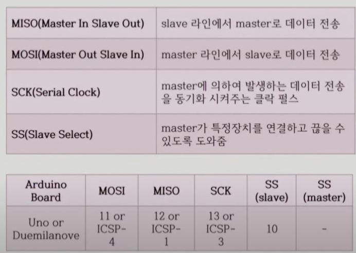
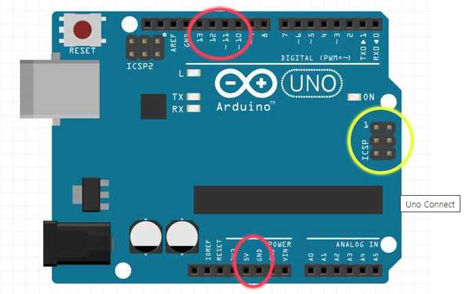
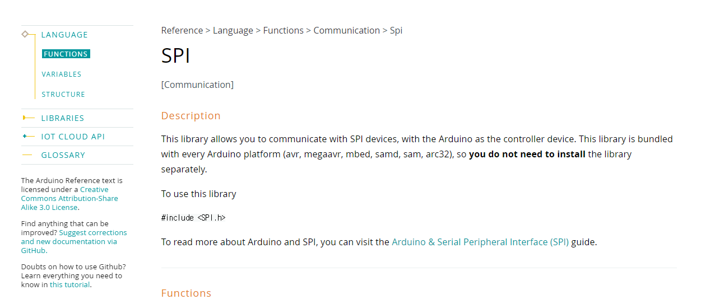
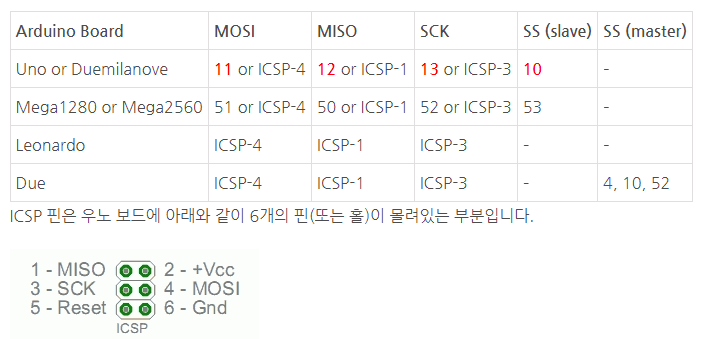

130_SPI통신원리_초고속전이중 ⚡🚄

도로시와 지니가 함께하는 SPI(Serial Peripheral Interface) 탐험
- 👧 도로시: “지니야! I2C보다 훨씬 빠르고 데이터를 보내는 동시에 받을 수 있는 통신도 있어?”
- 🐱 지니: “그럼! 모토로라에서 고안한 SPI(Serial Peripheral Interface) 통신은 송수신이 동시에 일어나는 동기식 전이중(Full Duplex) 초고속 통신이란다!”
-
🐶 토토: “바우! 지휘자의 지휘봉(SS)이 가리키는 악기만 소리를 내는 오케스트라 같다 멍!”
- 🖥️ 강의 슬라이드: slides.md
1. SPI 통신이란 무엇일까요?

🚀 고속 주변장치를 위한 시리얼 버스 아키텍처
SPI 통신은 마이크로컨트롤러와 외장 메모리(SD 카드), 고해상도 TFT LCD, RF 무선 모듈, 고정밀 센서 간에 수 MHz에서 수십 MHz의 압도적인 속도로 데이터를 교환하는 표준 인터페이스입니다.
- 동기식 통신 (Synchronous):
- 마스터가 생성하는 공통 클록(SCK) 신호의 엣지(Edge)에 맞추어 비트를 1비트씩 주고받으므로 속도 오차가 발생하지 않습니다.
- 전이중 통신 (Full Duplex):
- 송신 라인과 수신 라인이 물리적으로 분리되어 있어, 데이터를 마스터가 슬레이브로 쏘는 바로 그 순간에 슬레이브도 마스터로 응답 데이터를 밀어 넣습니다.
- 마스터-슬레이브 구조 (Master-Slave):
- 1개의 마스터(Master)가 전체 통신 클록과 슬레이브 선택 신호를 완벽하게 통제합니다.
2. SPI 통신의 핵심 4개 전선

🎼 오케스트라를 움직이는 4개의 신호선
SPI 통신을 구축하기 위해서는 4개의 물리적 신호선과 1개의 공통 접지선(GND)이 필요합니다.
| 신호선 약칭 | 정식 영문 명칭 | 아두이노 우노 핀 | 신호 방향 | 핵심 역할 |
|---|---|---|---|---|
| MOSI | Master Out Slave In | D11 | Master ➡️ Slave | 마스터가 슬레이브에게 보내는 직렬 데이터 출력선 |
| MISO | Master In Slave Out | D12 | Slave ➡️ Master | 슬레이브가 마스터에게 보내는 직렬 데이터 응답선 |
| SCK | Serial Clock | D13 | Master ➡️ Slave | 데이터 비트 전송 박자를 맞추는 마스터 동기 클록선 |
| SS (CS) | Slave Select / Chip Select | D10 등 임의 핀 | Master ➡️ Slave | 통신할 특정 슬레이브를 깨우는 활성화 선택선 (Active-LOW) |
3. 우노(UNO) vs 메가(Mega) 하드웨어 SPI 핀 매핑

📌 보드별 하드웨어 SPI 전용 핀 안내
아두이노의 하드웨어 SPI 레지스터는 특정 디지털 핀에 물리적으로 하드와이어링(Hard-wired)되어 있습니다.
graph LR
subgraph Arduino UNO
U_SS["D10 (SS)"]
U_MOSI["D11 (MOSI)"]
U_MISO["D12 (MISO)"]
U_SCK["D13 (SCK)"]
end
subgraph Arduino Mega 2560
M_SS["D53 (SS)"]
M_MOSI["D51 (MOSI)"]
M_MISO["D50 (MISO)"]
M_SCK["D52 (SCK)"]
end
[!IMPORTANT] 우노와 메가를 SPI로 연결할 때는 핀 번호(11, 12, 13)가 아니라 신호 이름(MOSI-MOSI, MISO-MISO, SCK-SCK)을 기준으로 교차 없이 1:1 직결해야 합니다!
4. 슬레이브 선택(SS)의 비밀: Active LOW

🤫 평소엔 조용히(HIGH), 대화할 땐 깨우기(LOW)!
SPI 버스에 연결된 모든 슬레이브 장치는 Active LOW 방식으로 동작합니다.
sequenceDiagram
autonumber
participant M as Master Arduino
participant SS as SS Line (Pin 10)
participant SCK as SCK Clock (Pin 13)
participant MOSI as MOSI Line (Pin 11)
participant S as Target Slave
Note over SS: 평상시 HIGH (5V, 대기 상태)
M->>SS: digitalWrite(SS, LOW) (0V 활성화!)
Note over S: 슬레이브 수신 준비 완료
M->>SCK: 8개의 클록 펄스 생성
M->>MOSI: 1바이트 데이터 직렬 전송 (동시 MISO 수신)
M->>SS: digitalWrite(SS, HIGH) (통신 종료)
Note over S: 슬레이브 다시 대기(Hi-Z) 모드로 전환
- 슬레이브들은 평소에 SS = HIGH (5V) 상태로 출력 핀(MISO)을 고임피던스(Hi-Z) 상태로 격리해 둡니다.
- 마스터가 특정 슬레이브와 대화할 때만 해당 슬레이브의 SS 핀을 LOW(0V) 로 떨어뜨려 깨웁니다.
- 데이터 교환이 끝나면 다시 SS = HIGH 로 올려 버스를 다른 장치에 양보합니다.
5. 통신 방식 3총사 완전 비교: UART vs I2C vs SPI

🏆 아두이노 3대 시리얼 통신 종합 분석
| 비교 항목 | UART 시리얼 (Serial) | I2C (Wire) | SPI (SPI.h) |
|---|---|---|---|
| 필요 신호선 수 | 2가닥 (TX, RX) | 2가닥 (SDA, SCL) | 4가닥 (MOSI, MISO, SCK, SS) |
| 통신 속도 | 보통 (~115.2 kbps) | 보통/빠름 (100k~400 kbps) | 초고속 (수 MHz ~ 20 MHz 이상) |
| 전송 방식 | 비동기 (스타트/스톱 비트 필요) | 동기식 반이중 (Half Duplex) | 동기식 전이중 (Full Duplex) |
| 디바이스 식별 | 1:1 직결 전용 | 7비트 고유 주소 소프트웨어 지정 | 독립된 SS 하드웨어 핀 제어 |
| 데이터 오버헤드 | 중간 (패킷 프레이밍) | 큼 (주소, ACK/NACK 비트) | 없음 (순수 데이터 바이트 전송) |
| 주요 활용 분야 | 시리얼 모니터, GPS, 블루투스 | 온습도 센서, RTC, I2C LCD | SD 카드, 컬러 TFT LCD, 무선 NRF |
6. 아두이노 SPI 표준 라이브러리 (SPI.h) 기본 사용법

📚 마스터 측의 표준 송수신 코드 템플릿
아두이노 코어에 내장된 <SPI.h> 라이브러리를 사용하면 하드웨어 레지스터를 직접 건드리지 않고도 안전하게 SPI 통신을 수행할 수 있습니다.
#include <SPI.h> // 표준 SPI 라이브러리 포함
const int pinSS = 10; // 슬레이브 선택 핀 지정
void setup() {
pinMode(pinSS, OUTPUT); // SS 핀을 마스터 출력 모드로 설정
digitalWrite(pinSS, HIGH); // 초기 상태는 HIGH (비활성화 상태)로 유지
SPI.begin(); // 하드웨어 SPI 모듈 가동 (SCK=13, MOSI=11, MISO=12 자동 설정)
SPI.setClockDivider(SPI_CLOCK_DIV4); // 16MHz 클록을 4분주 (4MHz 통신 속도 설정)
}
void loop() {
digitalWrite(pinSS, LOW); // 1. 슬레이브 선택 (통신 시작!)
// 2. 1바이트(0x42)를 슬레이브로 쏘는 동시에 슬레이브가 밀어낸 1바이트를 수신받아 변수에 저장
byte response = SPI.transfer(0x42);
digitalWrite(pinSS, HIGH); // 3. 슬레이브 선택 해제 (통신 완료!)
delay(1000); // 1초 간격 반복
}
🌟 도로시와 지니의 핵심 요약 노트!

- 👧 도로시: “SPI는 주소 없이 물리적인 SS 핀을 LOW로 끄집어내어 1:1로 초고속 데이터를 전이중으로 교환하는 통신이구나!”
- 🐱 지니: “맞아! I2C보다 선이 조금 더 필요하지만, 오버헤드가 전혀 없어서 SD 카드나 그래픽 LCD처럼 대용량 데이터를 다룰 때 필수적이란다.”
- 🐶 토토: “바우! 다음 장에서는 마스터 아두이노와 슬레이브 아두이노를 실제로 SPI로 연결해서 데이터를 주고받아 보자 멍!”
서브목차